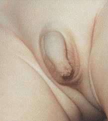

Normal development of the prepuce:
Birth through age 18
Introduction
The genital organs are in a very immature stage of development at birth. The growth and development continues through puberty and into adulthood. This page and the indexed articles provide information on that normal development. Articles are indexed in chronological order.

"The Phony Phimosis Diagnosis"
The normal growth and development of the prepuce of the human male has been greatly misunderstood both by the medical community and by the public. This misunderstanding has led to many unnecessary, contraindicated circumcisions being performed on young boys.
Typically, when a baby boy is born, the prepuce is long with a narrow tip.4,5 Retraction is not possible in the majority of infants because the narrow tip will not pass over the glans penis. Moreover, the inner mucosal surface of the prepuce is fused with the underlying mucosal surface of the glans penis.2,4,6,11 This also prevents retraction. This normal developmental narrowness is sometimes improperly diagnosed as phimosis (a fairly rare pathological condition, characterized by hardening of the tip of the foreskin, and a whitish ring of hardened tissue). In fact, the normal developmental narrowness is not phimosis. It is simply a normal stage of development.
The fusion of the foreskin to the underlying glans penis is often improperly called "adhesions." The fused foreskin and glans sometimes will separate by age 3-5, but usually this takes longer. Øster observed boys in which this normal process was not completed until after puberty.6
Fig. 1 Non-retractile foreskin of
infant boy
(normal for age) BMJ 1996;312:299.
As the infant matures into a boy and the boy into a man, a number of changes occur: The tip of the prepuce becomes wider, the tip seems to become shorter as the shaft of the penis grows. The membrane that bonds the inner surface of the prepuce with the glans penis spontaneously disintegrates and releases the prepuce to separate from the glans. The prepuce spontaneously becomes retractable.

Fig. 2 Normal foreskin at 15 months of
age.
Many medical doctors in the United States receive no training in the normal development of the prepuce. Thus they improperly diagnose a normal developmental condition as "phimosis."9
As noted above, a large number of medical doctors have not had the benefit of the information contained on this page, because it has not become part of the standard medical curriculum. Many physicians today are unable to distingish between normal developmental tightness (as described here) and clinical phimosis. Nor are they able to answer with accuracy when the prepuce should become retractable.9 These ill-trained doctors may attempt to prematurely retract the foreskin which is traumatic for the child.9 Parents should guard against this possibility.
The prepuce contains muscle fibers that work to keep the tip closed when the child is not urinating.1,9 This may cause parents and physicians to believe that the opening is smaller than it really is. Catzel explains how to examine a child's prepuce correctly to avoid misdiagnosis.11
The false diagnosis of phimosis in boys is very common in the United States and the United Kingdom. See here for more information.
Ballooning
There is a phase of development during which some boys may experience "ballooning." Ballooning is the inflation of the prepuce during urination by the pressure of urine inside. This can occur if the inner layer of the prepuce is separating or has separated from the glans, which typically happens around three years of age, before the prepuce has become fully retractable. Ballooning is an indication that the normal separation of the foreskin from the glans penis has occurred. Ballooning is a transient condition that goes away as the prepuce continues its natural growth and development and the opening at the tip further enlarges. Babu et al. report that ballooning does not interfere with voiding.20 Ballooning is not injurious, and it is not a cause for concern. Ballooning is not an indication for circumcision.
The maturation of the penis may take years to complete. Each boy develops at his own rate. The maturation of the prepuce continues beyond puberty as described below.
The appearance of the infant penis does not reflect on the appearance of the adult penis. Sexual development after puberty causes many changes, which include retractibility of the foreskin.
Douglas Gairdner (1949)
Gairdner, a British pediatrician, observed 100 newborns and about 200 boys of varying ages through age 5. Gairdner reported that 4% of newborns had a fully retractable prepuce, In 54% the glans could only be uncovered enough to reveal the external meatus, and in 42% even the tip of the glans could not be uncovered. He also said that, in boys of six months of age, four out of five or 80% still had non-retractable prepuces. By 1 year of age, 50% still had non-retractable prepuces. By two years about 20% and by 3 years about 10% of boys still had a non-retractable prepuce.4
Gairdner also noted that the separation of the prepuce was incomplete at these ages and this incomplete separation is the cause of the non-retractabality. He said the surfaces should not be torn apart because this causes bleeding and infection. Gairdner provided a table which showed:
Age Percent retractable.
Birth 4
Age 1 50
Age 2 75
Age 3 90
Age 4 91
Age 5 92
|
Gairdner in 1949 had collected no data beyond age 5, which led some authors improperly to assume that circumcision was necessary if the prepuce was not retractable by that age.
Gairdner's figures on percentage of retractability, collected in the 1940s,4 are now known to be too high.12 17,18 Unfortunately, many doctors still erroneously use these outmoded figures and this causes improper diagnosis of phimosis in normal boys and leads to unnecessary circumcisions. Later studies6,13,14, 16 have indicated that only about 40-50 percent of boys have fully retractable foreskins at age ten. (see below).
Jakob Øster (1968)
The normal development of the prepuce beyond age 5 was first documented by Jakob Øster, a Danish pediatrician, who published his work in 1968.6
Øster reported progressive increase in the retractability of the prepuce with increasing age. Øster, a school health officer, was responsible for the physical examinations of large numbers of boys of school age. Neonatal circumcision is not practiced in Denmark, so all of the boys were intact. Øster conducted examinations of boys aged 6 to 17 years old from school year 1957-58 through 1964-65.
Øster classified two grades of tightness of the prepuce: A non-retractable prepuce was termed phimosis, and a prepuce that could be retracted with difficulty he called tight prepuce. He found that the percentage of boys with "phimosis" or "tight prepuce" steadily declined with increasing age. Dr. Øster's work is presented in his article in such a fashion that it is somewhat difficult to understand. He presented findings on "phimosis", "tight prepuce" and "adhesions" separately. Actually, all of those conditions prevent free and easy retraction of the foreskin so it is necessary to consider incidence of the three conditions together to determine the percentage of boys that have complete retractability. The Circumcision Reference Library restates Øster's work here by combining his findings into one table. The combined total of boys by age who do not have complete retractability is shown in the table:
| Øster's6 Retraction Data Restated17 | |||||
|---|---|---|---|---|---|
| Age | Phimosis | Tight prepuce |
Not fully separated |
Total percent non-retractable |
Total percent retractable |
| 6-7 | 8% | 6% | 63% | 77% | 23% |
| 8-9 | 6% | 2% | 58% | 66% | 34% |
| 10-11 | 6% | 2% | 48% | 56% | 44% |
| 12-13 | 3% | 3% | 34% | 40% | 60% |
| 14-15 | 1% | 1% | 13% | 15% | 85% |
| 16-17 | 1% | 1% | 3% | 5% | 95% |
Øster's figures refute Gairdner's claims that 90 percent are retractable at age five, Øster found that the 90 percent retractable stage is not reached until about age 16.
Grogono (1979)
E. B. Grogono, a school medical officer, observed that boys, with a non-retractile prepuce at age 11, have a fully retractile prepuce by age 14 or 15. Grogono further reported that the non-retractile prepuce caused no problems.8
Hiroyuki Kayaba (1996)
Kayaba, a Japanese doctor, recorded the findings on examination of 603 Japanese boys.13 Kayaba classified the prepuce types into five categories. Kayaba noted a steady progression to increasing retractability with increasing age.13
Kayaba's work refutes the findings of Gairdner and confirms the work of Øster. Kayaba reported that about 40 percent of boys in the 8-10 age group are fully retractable, this leaving about 60 percent with some degree of non-retractability, He also reported that 62.9 percent of the boys in the 11 to 15 year old age group had completely retractable prepuces, thus leaving 37.1 percent with some degree of non-retractability. The prepuce is still developing in the 11-15-year-old group. Kayaba's findings are similar to those of Øster.
Kayaba made no reports beyond age 15.
Kayaba's report thus confirms the work of Øster; we see that full retractability is not reached by about 1/2 of boys until the teen-age years. This is normal, and treatment is usually not required.
Imamura (1997)
Imamura's study, carried out in Japan, shows that the non-retractile prepuce is the normal condition in preschool age boys.14 Imamura found that only 38.4 percent of children three years old have a fully retractable prepuce. Imamura's data are similar to that of Kayaba.13 Imamura advises that no treatment is necessary for non-retractile prepuce.14 Imamura's findings14 provide further evidence of the incorrectness of Gairdner's4 data.
Cold & Taylor (1999)


Fig. 2. Incidence of preputial adhesions in various age groups, after Øster [20]. Fig. 3. Retractability of the prepuce in various age groups. After Kayaba et al.[22]. The tight preputial ring is shown in green and the type IV and V as red; a type IV prepuce retracts to the glans corona and type V retracts to completely expose the glans.
Drs. Christopher J. Cold and John R. Taylor have included a discussion of the normal development of the prepuce under the "Embryology" heading of their landmark article on the human prepuce.15 The development of retractability is shown in graphic form.
Concepción-Morales (2002)
A study performed in Cuba by Concepción-Morales et al. further confirms the work of Øster and Kayaba. The work, published in Spanish, has an English language abstract.16
Ishikawa and Kawakita (2004)
Ishikawa and Kawakita investigated preputial retractability in 242 Japanese boys. They found that no boys had a retractable prepuce at birth but in the age group 11-15, 77 percent had a retractable prepuce while 23 percent remained non-retracable. This confirms previous evidence that, for many boys, the prepuce does not become retractable until after puberty.19
Thorvaldsen and Meyhoff (2005)
Thorvaldsen conducted a survey of young men in Denmark. They found that the average age of first foreskin retraction is 10.4 years.21
Agawal, Mohta, and Anand (2005)
Agawal, Mohta, and Anand carried out a study in Delhi, India of boys up to age 12. Their study found that preputial retractability continues to develop through age 12, confirming the work of Oster (1968), Kayaba et al. (1996), and Thorvaldsen (2005).22
Beyond age 18
There are no studies in the medical literature of development of the prepuce beyond age 18. Anecdotal evidence indicates that most of the few males who still have a tight prepuce at age 18 find that the prepuce eventually stretches and enlarges so that full retractability of the foreskin is obtained in the early 20s.
Conclusion
Almost all boys are born with narrow non-retractile foreskin which are fused with the glans beneath. This is a normal developmental physiological condition and is not a cause for concern. Some parents needlessly worry that the opening is not large enough.
Retraction of the foreskin should never be forced. It will retract when it is ready. There is no "right" age for retraction to occur.
A narrow non-retractable prepuce in boys is within the normal range of development and usually causes no problems. The prepuce usually will spontaneously widen until complete retractability is obtained. About 50-60 percent of boys at age ten do not have fully retractable foreskins.17 This is normal.17 After puberty, the percentage of boys with full retractability rapidly increases spontaneously.17
If a narrow or non-retractile prepuce becomes a problem, a wide variety of conservative alternative treatments to circumcision are are now available. Circumcision is an outmoded, radical, traumatic, disproportionate, unnecessary surgery for a minor problem.
After you have studied this page and its linked articles, you will know more about the normal development of the prepuce than most medical doctors.
Library Holdings
- Jefferson G. The peripenic muscle; Some observations on the anatomy of phimosis. Surgery, Gynecology, and Obstetrics (Chicago) 1916;23(2):177-181.
- Deibert, GA. The separation of the prepuce in the human penis. Anat Rec 1933;57:387-399.
- Hunter RH. Notes on the development of the prepuce. J Anat 1935;70(1):68-75.
- Gairdner D. The fate of the foreskin. Brit Med J 1949:2:1433-7.
- Spence J. On Circumcision. Lancet 1964;2:902.
- Øster J. Further Fate of the Foreskin: Incidence of Preputial Adhesions, Phimosis, and Smegma among Danish Schoolboys. Arch Dis Child, April 1968. p. 200-202.
- Wright, Joyce. Nature's assurance that the uncircumcised glans penis will function smoothly is provided by smegma. Sexology (New York), Vol 37, no. 2 (September 1970) pp. 50-53.
- Grogono EB. The case against circumcision. Br Med J 1979;1:1423.
- Lakshmanan S, Prakash S. Human prepuce: Some aspects of structure and function. Indian Journal of Surgery 1980;(44):134-7.
- Osborn LM. Metcalf TJ, Mariani EM. Hygienic care in uncircumcised infants. Pediatrics 1981; 67:365-7.
- Catzel P. The normal foreskin in the young child. (letter) S Afr Mediense Tysskrif [South Afr Med J] 1982 (13 November 1982) 62:751.
- Wright JE. Further to "The further fate of the foreskin": Update on the natural history of the foreskin. Medical Journal of Australia (7 February 1994) ;160:134-135.
- Kayaba H, et al. Analysis of shape and retractability of the prepuce in 603 Japanese boys. Journal of Urology, 1996;156(5):1813-1815.
- Imamura E. Phimosis of infants and young children in Japan. Acta Paediatr Jpn 1997;39(4):403-5.
- Cold CJ, Taylor JR. The prepuce. BJU Int 1999;83 Suppl. 1:34-44.
- Morales Concepción JC, Cordies Jackson E, Guerra Rodriguez M, et al. ¿Debe realizarse circuncisión en la infancia. Arch Esp Urol 2002;55(7):807-11.
- Hill G. Circumcision for phimosis and other medical indications in Western Australian boys (Letter). Med J Aust 2003;178(11):587.
- Hill G. Triple incision to treat phimosis in children: an alternative to circumcision (letter). BJU Int 2004;93(4):636.
- Ishikawa E, Kawakita M. [Preputial development in Japanese boys]. Hinyokika Kiyo 2004;50(5):305-8.
- Babu R, Harrison SK, Hutton KA. Ballooning of the foreskin and physiological phimosis: is there any objective evidence of obstructed voiding? BJU Int 2004;94(3):384-7.
- Thorvaldsen MA, Meyhoff H. Patologisk eller fysiologisk fimose? Ugeskr Læger 2005;167(17):1858-62.
- Agawal A, Mohta A, Anand RK. Preputial retraction in children. J Indian Assoc Pediatr Surg 2005;10(2):89-91.
- Ko MC, Lui CK, Lee WK, et al. Age-specific prevalence rates of phimosis and circumcision in Taiwanese boys. J Formos Med Assoc 2007;106(4):302–7.

Information for parents
The following pamphlets have been prepared for the information of parents:
- Newborns: Care of the Uncircumcised Penis. Elk Grove Village: American Academy of Pediatrics, 1984.
- Peron JE. Care of the intact penis. Midwifery Today (November) 1991; Issue 17:24. (Childbirth Education Foundation, Oxford, PA.)
- Questions about your son's intact penis. San Anselmo: NOCIRC, 1997. (Link to www.nocirc.org)
- Care of the Uncircumcised Penis. Elk Grove Village, IL: American Academy of Pediatrics, 1999.
- Questions About Premature (Forcible) Retraction of Your Young Son's Foreskin. (Pamphlet) San Anselmo: NOCIRC, 2000. (Link to www.nocirc.org)
- American Academy of Pediatrics. Care of the Uncircumcised Penis. Elk Grove Village, IL: American Academy of Pediatrics, 2000.
- Circumcision: Information for Parents. Ottawa: Canadian Paediatric Society, November 2004.
External irritants can sometimes cause a previously retractable prepuce to become non-retractable due to swelling of the tissues. If a child whose prepuce was retractable becomes non-retractable, environmental factors should be investigated. One known culprit is bubble bath. If a child is taking bubble baths and the prepuce becomes non-retractable, the bubble bath should be discontinued. See Penile Hygiene in the Intact Non-circumcised Male for comprehensive information on foreskin care.